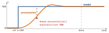
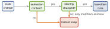

swiftui · folio
In one line: You never animate frame by frame: you change state (SwiftUI) or set the final value (UIKit) inside an animation context, and the framework interpolates every animatable property old → new. The questions are always: which change is in the context, and can it be interpolated?
Download PDF Print view LaTeX source

SwiftUI
- Explicit
withAnimation(.spring) { open.toggle() }: animates every view depending on state changed in the block (mutation site decides). Implicit.animation(.easeIn, value: s): only changes ofs, only in that subtree (view decides)..animation(_:)withoutvalue:is deprecated — it animated any change. - Transaction carries the animation through one update:
withTransactionis the general form;.transaction { $0.animation = nil }strips an inherited one;disablesAnimations = trueforces a snap. - Animatable: built-in modifiers interpolate (opacity, offset, scale, frame, colour). A custom
Shape/modifier must exposeanimatableData: VectorArithmetic(two values →AnimatablePair) — otherwise it jumps. - Transition (
.opacity,.move(edge:),
.asymmetric(insertion:removal:)) = entering or leaving the tree: needs an identity change (if, new.id) and an animation context, and sits on the conditional view. - matchedGeometryEffect(id:in:): same id, same
@Namespace, views mounted exclusively, insidewithAnimation→ hero morph. - Springs (default since iOS 17):
.spring(duration: 0.5, bounce: 0.2),.smooth/.snappy/.bouncy. Interruptible, re-target keeping velocity; curves have fixed duration. - iOS 17:
PhaseAnimatorsteps through discrete phases (loop ortrigger:);KeyframeAnimator= timed per-propertyKeyframeTracks (Linear/Spring/CubicKeyframe).
Example
struct Ring: Shape {
var p: CGFloat // 0...1
var animatableData: CGFloat { get { p } set { p = newValue } }
func path(in r: CGRect) -> Path { Path() } // arc to p
}
struct Card: View {
@State private var open = false
@Namespace private var ns
var body: some View {
if open { Big().matchedGeometryEffect(id: "c", in: ns) }
else { Small().matchedGeometryEffect(id: "c", in: ns) }
Button("Go") { withAnimation(.snappy) { open.toggle() } }
}
}UIKit
UIView.animate(withDuration:…): set final values in the block. Animatable:frame,bounds,center,transform,alpha,backgroundColor;text/isHiddensnap. Springs:usingSpringWithDamping:(<1 bounces); iOS 17animate(springDuration:bounce:).- UIViewPropertyAnimator is an object:
startAnimation(),pauseAnimation(), scrubfractionComplete,isReversed, finish withcontinueAnimation(withTimingParameters:…)— interruptible gesture-driven UI. - Auto Layout: change
constant, thenlayoutIfNeeded()inside the block (flush once before). UIView.transition(with:…)+.transitionCrossDissolve; custom VC transitions must callcompleteTransition(_:).
Model vs presentation

UIView animations set the model for you. A raw
CABasicAnimation drives only the presentation ⇒ it
snaps back unless you also set the model value.
When does a transition run?

Traps
withAnimationanimates all dependent views — scope with.animation(_:value:)or strip with.transaction..transitionwithout an animation = instant; on a stable ancestor = never runs.- Custom
Shapejumps → noanimatableData. matchedGeometry glitch → both views mounted / two namespaces. - Layer animation snaps back → model never set (
fillMode = .forwards+isRemovedOnCompletion = falseonly hides it). - Constraint change jumps → no
layoutIfNeeded()inside the block. - Scrubbing a spring:
pauseAnimation()first;fractionCompletemaps through the curve.
Remember
“State in the block, value in the modifier, identity for
transitions.” UIKit: final value in — the model is already there. Cheapest to animate: transform, opacity.